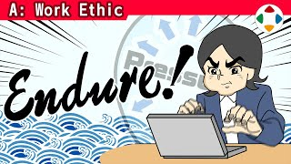
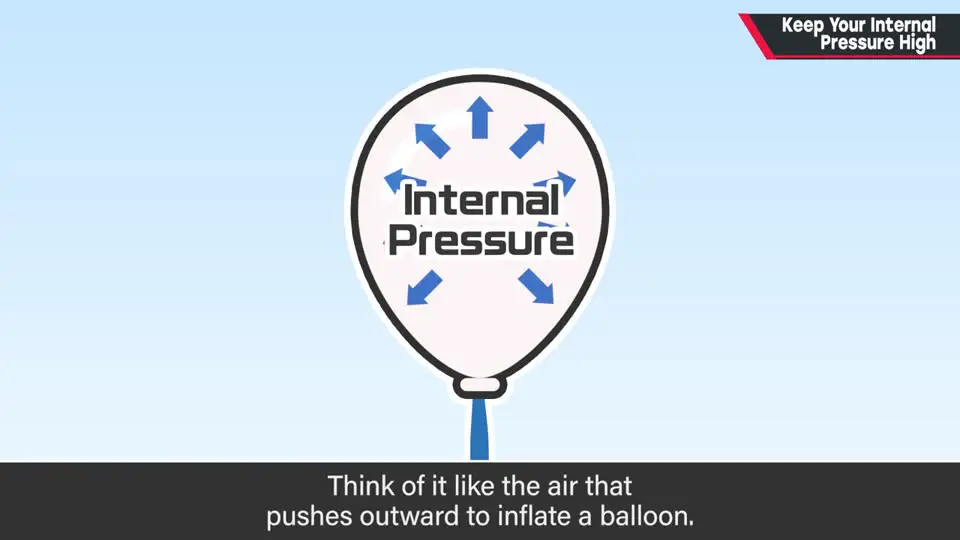
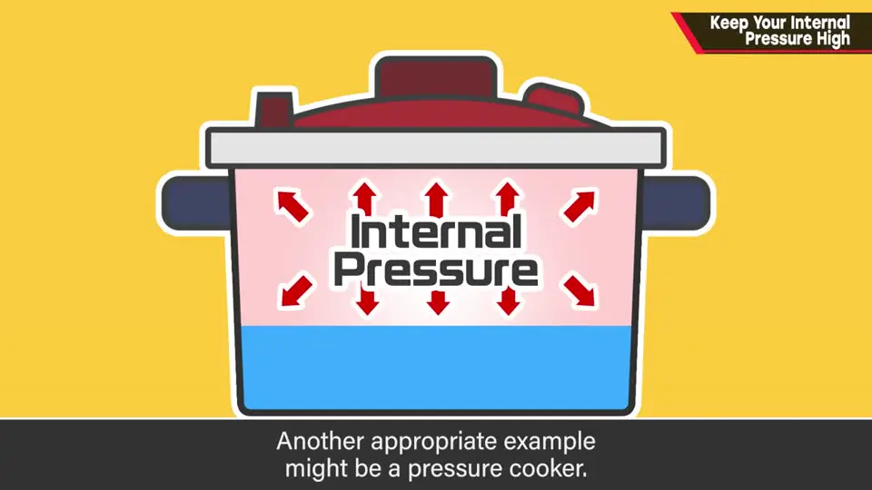
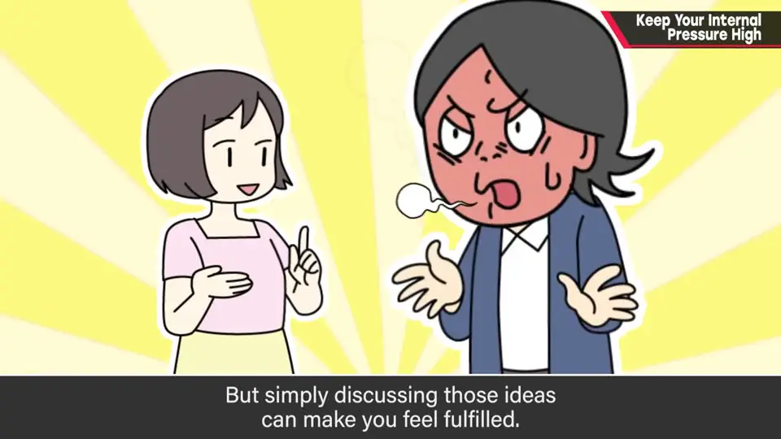
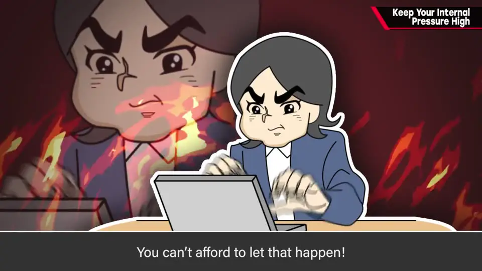
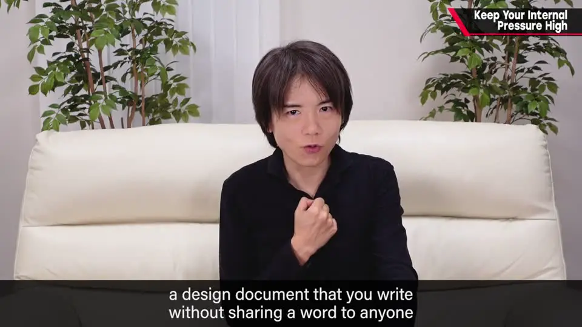
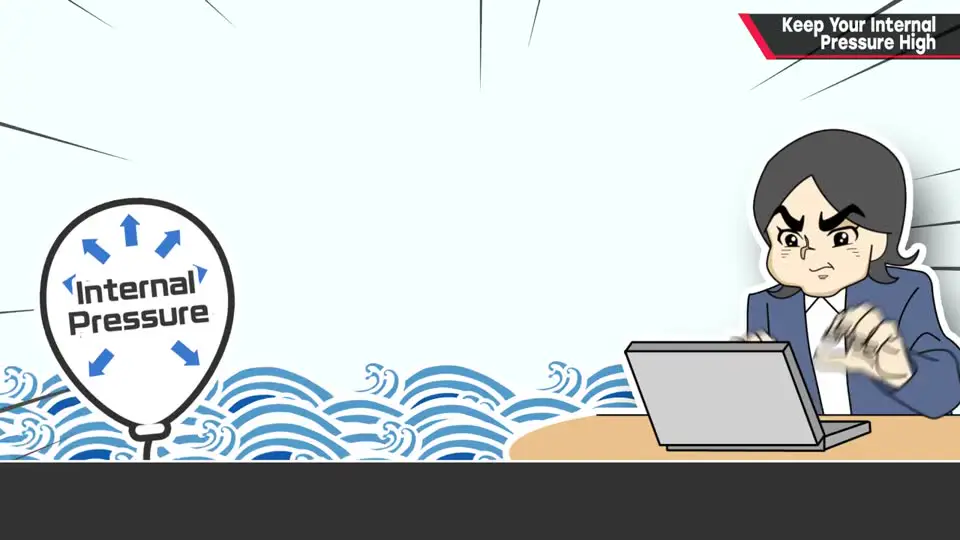
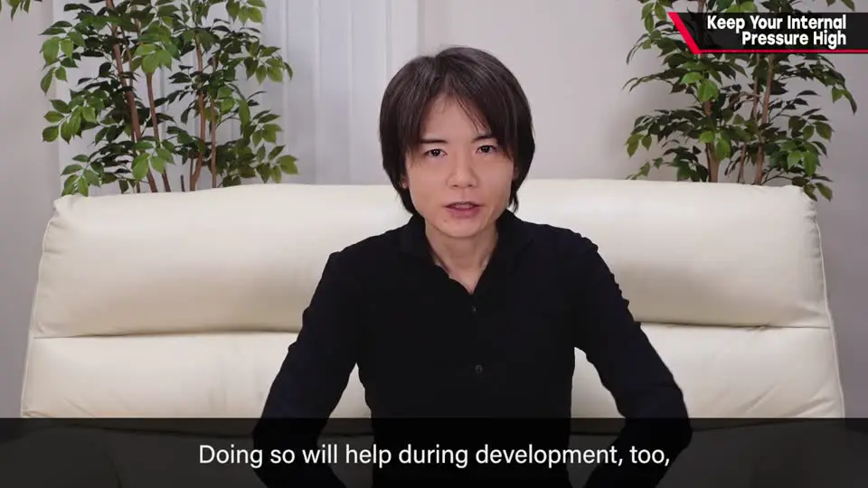

速览
从零写企划书时，樱井建议：写完之前绝对不要跟人说。他相信并实践「内压」——像给气球或压力锅加压那样，在脑子里把规格越压越浓。跟人一说就会满足，等于把压泄掉，点子的力会散掉。脑暴、找人挑弱点都有用，但企划书本身需要「想做」的热量；自己憋着写完的规格书，通常比脑暴后再被派去整理的规格书更烫手。SNS 发进度也一样是泄压——先忍住、把内压长出来，再把那股劲砸进工作；写的时候还可以想象对方看到时会怎么反应。
1. 从零开写：写完前别跟人说 0:03
如果你正在写企划书，或从零启动某样东西——樱井的建议是：
- 写到中途之前，绝对不要跟人说。
- 忍住，把心里的企划一路写下去。
2. 什么是「内压」 0:22

他相信并实践「内压」这个想法：像给气球充气那样、往外撑开的压力——用压力锅来比喻或许更贴切。
- 规格是在脑子里不断加压鼓起来的；
- 重点不是单纯「变大」，而是用力把里面的力挤出来。
可人一跟人说话就会满足——等于把压适度泄掉，里面的力也就散了。现在不是泄压的时候：要一直加压，让企划与点子的能量更浓。



3. 脑暴有用，但企划书要热量 1:49
他理解：找人商量拿新点子、找弱点，以及脑暴，都是有效手法。但——
- 写企划书需要力：「想做、要做」的心情，会让企划书里感觉到压。
- 脑暴后再被派去整理的规格书，往往不如自己谁也不说、憋着写完的规格书热量高。
- 真要咨询，也建议先把企划书写完，再谈；先对自己下功夫、埋头写。

flowchart TD
A["从零写企划"] --> B{"中途跟人说 / 发 SNS？"}
B -->|"是"| C["满足 → 泄压 → 点子的力散掉"]
B -->|"否"| D["内压升高 → 规格更浓"]
D --> E["写完后再咨询 / 发表"]
E --> F["把那股劲砸进工作"]
4. SNS 也别用来泄压 2:33

别把点子内容或工作进度发到 SNS 上泄压。先好好忍住、把内压养起来，再把那股势头砸进工作。
另外：写的时候想象对方看到会怎么反应，也会更有劲——做游戏也一样，想象玩家的反应与感动点，往往更能撑下去。

自测题
1. 樱井说的「内压」是什么意思？为什么跟人聊企划会破坏它？
像气球/压力锅里往外顶的压力。规格要在脑子里加压、把力挤出来；跟人一说就会满足，等于泄压，点子的力会散掉。 0:27
2. 脑暴和找人咨询都不反对，那写企划书时他建议怎么做？
企划书需要「想做」的热量。自己谁也不说、憋着写完的规格书，通常比脑暴后再被派去整理的更烫手；真要咨询，先写完再谈。 1:49
3. 关于 SNS，他额外提醒了什么？写的时候还可以做什么来加劲？
别把点子内容或工作进度发到 SNS 上泄压。先忍住、把内压养起来再砸进工作；写时想象对方看到时会怎么反应（做游戏时也一样，想象玩家的反应与感动点）。 2:33